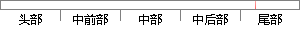

创建相应优先级的任务，并打印出该任务的栈地址和函数入口地址。
片段位置图

相似结果
相似片段：进程的优先级与承载它的任务的优先级相同,不同任务...任务入口函数地址等信息,这些信息在系统初始化创建...在目标机屏幕上打印出全部块申请开始和结束时间(当前...
| 标题 | 《面向通信领域的嵌入式软件平台——OSS的研究与实现》 |
| 对比库 | 中国学位论文全文数据库 |
| 作者 | 贵轩 |
| 机构 | 电子科技大学 |
| 分类 | 计算机软件与理论 |
| 年份 | 2004 |
| 相似率 | 90.48% （严重抄袭） |
※ 片段修改建议 ※
近似词参考：- 创建：建立 创立
- 任务：使命 义务
- 入口：进口
- 地址：地点
- 相应：响应
系统自动生成语句： 建立响应优先级的使命，并打印出该使命的栈地点和函数进口地点。
注：本片段修改建议为系统自动生成，仅供参考。